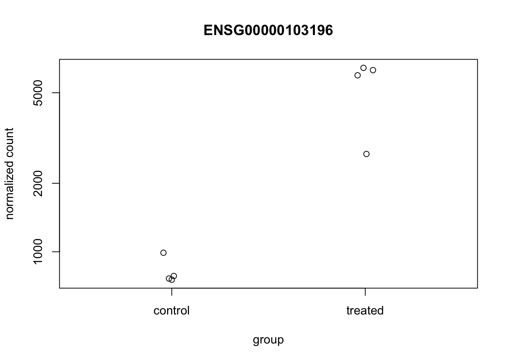
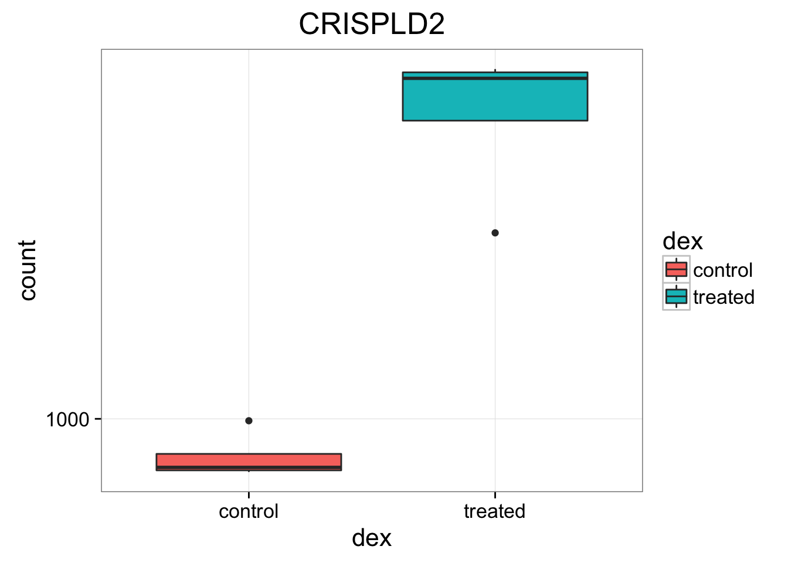
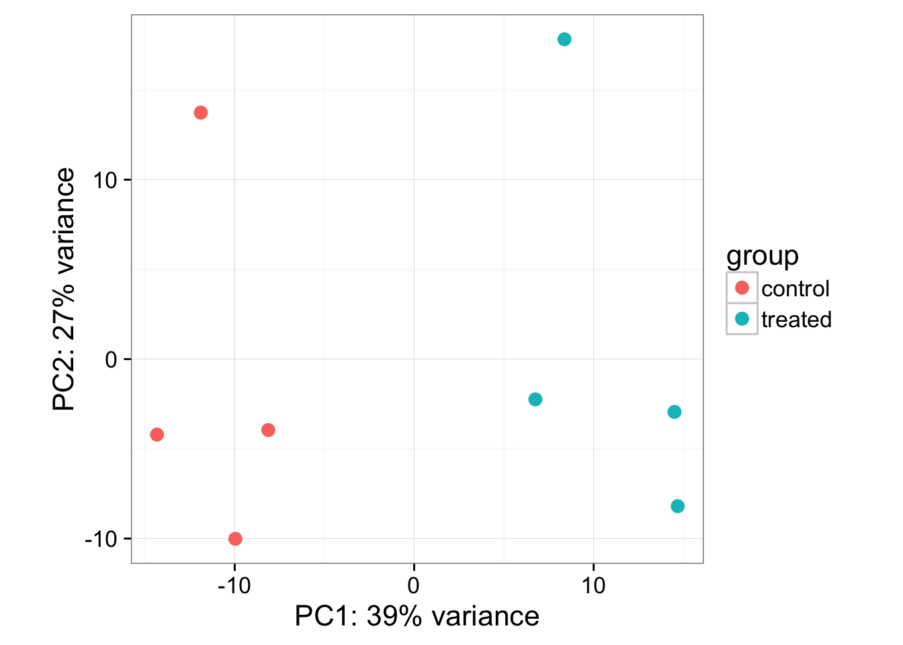
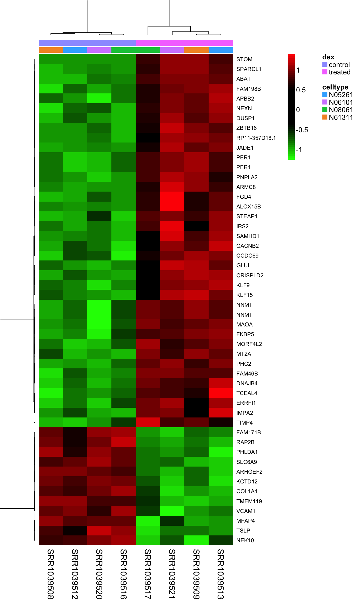

Count-Based Differential Expression Analysis of RNA-seq Data
This is an introduction to RNAseq analysis involving reading in count data from an RNAseq experiment, exploring the data using base R functions and then analysis with the DESeq2 package. This lesson assumes a basic familiarity with R, data frames, and manipulating data with dplyr and %>%. See also the Bioconductor heading on the setup page – you’ll need a few additional packages that are available through Bioconductor, not CRAN (the installation process is slightly different).
Recommended reading prior to class:
- Conesa et al. A survey of best practices for RNA-seq data analysis. Genome Biology 17:13 (2016).
- Abstract and introduction sections of Himes et al. “RNA-Seq transcriptome profiling identifies CRISPLD2 as a glucocorticoid responsive gene that modulates cytokine function in airway smooth muscle cells.” PLoS ONE 9.6 (2014): e99625.
- Soneson et al. “Differential analyses for RNA-seq: transcript-level estimates improve gene-level inferences.” F1000Research 4 (2015).
Review
Prerequsite skills
Data needed
- Count matrix (i.e.,
countData): airway_rawcounts.csv - Sample metadata (i.e.,
colData): airway_metadata.csv
Background
The biology
The data for this lesson comes from:
Himes et al. “RNA-Seq Transcriptome Profiling Identifies CRISPLD2 as a Glucocorticoid Responsive Gene that Modulates Cytokine Function in Airway Smooth Muscle Cells.” PLoS ONE. 2014 Jun 13;9(6):e99625. PMID: 24926665.
Glucocorticoids are potent inhibitors of inflammatory processes, and are widely used to treat asthma because of their anti-inflammatory effects on airway smooth muscle (ASM) cells. But what’s the molecular mechanism? This study used RNA-seq to profile gene expression changes in four different ASM cell lines treated with dexamethasone, a synthetic glucocorticoid molecule. They found a number of differentially expressed genes comparing dexamethasone-treated ASM cells to control cells, but focus much of the discussion on a gene called CRISPLD2. This gene encodes a secreted protein known to be involved in lung development, and SNPs in this gene in previous GWAS studies are associated with inhaled corticosteroid resistance and bronchodilator response in asthma patients. They confirmed the upregulated CRISPLD2 mRNA expression with qPCR and increased protein expression using Western blotting.
They did their analysis using Tophat and Cufflinks. We’re taking a different approach and using an R package called DESeq2. Click here to read more on DESeq2 and other approaches.
Data pre-processing
Analyzing an RNAseq experiment begins with sequencing reads. There are many ways to begin analyzing this data, and you should check out the three papers below to get a sense of other analysis strategies. In the workflow we’ll use here, sequencing reads were aligned to a reference genome, then the number of reads that mapped to each gene region were counted. This is the starting point - a “count matrix,” where each cell indicates the number of reads mapping to a particular gene (in rows) for each sample (in columns). This workflow was chosen because of its widespread use, and because of recent data showing that it’s relatively robust to potential gene length biases [3]. However, there are many well-established alternative analysis paths, and the goal here is to provide a reference point to acquire fundamental skills that will be applicable to other bioinformatics tools and workflows.
- Griffith, Malachi, et al. “Informatics for RNA sequencing: a web resource for analysis on the cloud.” PLoS Comput Biol 11.8: e1004393 (2015).
- Conesa, A. et al. “A survey of best practices for RNA-seq data analysis.” Genome Biology 17:13 (2016).
- Soneson, C., Love, M. I. & Robinson, M. D. “Differential analyses for RNA-seq: transcript-level estimates improve gene-level inferences.” F1000Res. 4:1521 (2016).
This data was downloaded from GEO (GSE:GSE52778). You can read more about how the data was processed here. In summary, the process looks something like this. We have reads; we use an aligner and a reference genome to figure out where in the genome the reads come from (chromosome and position), and we cross-reference that against a reference annotation, which tells the chromosome/position location of exons for known genes.

Data structure
We’ll come back to this again later, but the data at our starting point looks like this (note: this is a generic schematic - our genes are not actually geneA and geneB, and our samples aren’t called ctrl_1, ctrl_2, etc.):

That is, we have two tables:
- The “count matrix” (called the
countDatain DESeq-speak) – where genes are in rows and samples are in columns, and the number in each cell is the number of reads that mapped to exons in that gene for that sample: airway_rawcounts.csv. - The sample metadata (called the
colDatain DESeq-speak) – where samples are in rows and metadata about those samples are in columns: airway_metadata.csv. It’s called thecolDatabecause this table supplies metadata/information about the columns of thecountDatamatrix. Notice that the column names of thecountDatamust match the row names of thecolData. A bit later we’ll revisit this, because there’s special syntax in R for specifying row names and column names of data frames.
Import data
First, let’s load the readr, dplyr, and ggplot2 libraries, and import our data like we’ve always done with read_csv() (note: not read.csv()). Let’s read in the actual count data and the experimental metadata.
library(readr)
library(dplyr)
library(ggplot2)
rawcounts <- read_csv("data/airway_rawcounts.csv")
metadata <- read_csv("data/airway_metadata.csv")Now, take a look at each.
rawcounts## # A tibble: 64,102 x 9
## ensgene SRR1039508 SRR1039509 SRR1039512 SRR1039513 SRR1039516
## <chr> <int> <int> <int> <int> <int>
## 1 ENSG00000000003 679 448 873 408 1138
## 2 ENSG00000000005 0 0 0 0 0
## 3 ENSG00000000419 467 515 621 365 587
## 4 ENSG00000000457 260 211 263 164 245
## 5 ENSG00000000460 60 55 40 35 78
## 6 ENSG00000000938 0 0 2 0 1
## 7 ENSG00000000971 3251 3679 6177 4252 6721
## 8 ENSG00000001036 1433 1062 1733 881 1424
## 9 ENSG00000001084 519 380 595 493 820
## 10 ENSG00000001167 394 236 464 175 658
## # ... with 64,092 more rows, and 3 more variables: SRR1039517 <int>,
## # SRR1039520 <int>, SRR1039521 <int>metadata## # A tibble: 8 x 4
## id dex celltype geo_id
## <chr> <chr> <chr> <chr>
## 1 SRR1039508 control N61311 GSM1275862
## 2 SRR1039509 treated N61311 GSM1275863
## 3 SRR1039512 control N052611 GSM1275866
## 4 SRR1039513 treated N052611 GSM1275867
## 5 SRR1039516 control N080611 GSM1275870
## 6 SRR1039517 treated N080611 GSM1275871
## 7 SRR1039520 control N061011 GSM1275874
## 8 SRR1039521 treated N061011 GSM1275875Notice something here. The sample IDs in the metadata sheet (SRR1039508, SRR1039509, etc.) exactly match the column names of the countdata, except for the first column, which contains the Ensembl gene ID. This is important, and we’ll get more strict about it later on.
Poor man’s DGE
Let’s look for differential gene expression. Note: this analysis is for demonstration only. NEVER do differential expression analysis this way!
Let’s start with an exercise.
EXERCISE 1
If we look at our metadata, we see that the control samples are SRR1039508, SRR1039512, SRR1039516, and SRR1039520. This bit of code will take the rawcounts data, mutate it to add a column called controlmean, then select only the gene name and this newly created column, and assigning the result to a new object called meancounts.
meancounts <- rawcounts %>%
mutate(controlmean = SRR1039508+SRR1039512+SRR1039516+SRR1039520) %>%
select(ensgene, controlmean)
meancounts## # A tibble: 64,102 x 2
## ensgene controlmean
## <chr> <int>
## 1 ENSG00000000003 3460
## 2 ENSG00000000005 0
## 3 ENSG00000000419 2092
## 4 ENSG00000000457 1001
## 5 ENSG00000000460 254
## 6 ENSG00000000938 3
## 7 ENSG00000000971 21325
## 8 ENSG00000001036 5949
## 9 ENSG00000001084 2630
## 10 ENSG00000001167 1876
## # ... with 64,092 more rows- Build off of this code,
mutateit once more (prior to theselect()) function, to add another column calledtreatedmeanthat takes the mean of the expression values of the treated samples. Thenselectonly theensgene,controlmeanandtreatedmeancolumns, assigning it to a new object called meancounts. It should look like this.
## # A tibble: 64,102 x 3
## ensgene controlmean treatedmean
## <chr> <int> <int>
## 1 ENSG00000000003 3460 2475
## 2 ENSG00000000005 0 0
## 3 ENSG00000000419 2092 2187
## 4 ENSG00000000457 1001 935
## 5 ENSG00000000460 254 213
## 6 ENSG00000000938 3 0
## 7 ENSG00000000971 21325 26953
## 8 ENSG00000001036 5949 4491
## 9 ENSG00000001084 2630 2291
## 10 ENSG00000001167 1876 1264
## # ... with 64,092 more rows- Directly comparing the raw counts is going to be problematic if we just happened to sequence one group at a higher depth than another. Later on we’ll do this analysis properly, normalizing by sequencing depth. But for now,
summarize()the data to show thesumof the mean counts across all genes for each group. Your answer should look like this:
## # A tibble: 1 x 2
## sum(controlmean) sum(treatedmean)
## <int> <int>
## 1 89561179 85955244How about another?
EXERCISE 2
- Create a scatter plot showing the mean of the treated samples against the mean of the control samples.

- Wait a sec. There are 60,000-some rows in this data, but I’m only seeing a few dozen dots at most outside of the big clump around the origin. Try plotting both axes on a log scale (hint:
... + scale_..._log10())

We can find candidate differentially expressed genes by looking for genes with a large change between control and dex-treated samples. We usually look at the \(log_2\) of the fold change, because this has better mathematical properties. On the absolute scale, upregulation goes from 1 to infinity, while downregulation is bounded by 0 and 1. On the log scale, upregulation goes from 0 to infinity, and downregulation goes from 0 to negative infinity. So, let’s mutate our meancounts object to add a log2foldchange column. Optionally pipe this to View().
meancounts %>% mutate(log2fc=log2(treatedmean/controlmean))## # A tibble: 64,102 x 4
## ensgene controlmean treatedmean log2fc
## <chr> <int> <int> <dbl>
## 1 ENSG00000000003 3460 2475 -0.4833
## 2 ENSG00000000005 0 0 NaN
## 3 ENSG00000000419 2092 2187 0.0641
## 4 ENSG00000000457 1001 935 -0.0984
## 5 ENSG00000000460 254 213 -0.2540
## 6 ENSG00000000938 3 0 -Inf
## 7 ENSG00000000971 21325 26953 0.3379
## 8 ENSG00000001036 5949 4491 -0.4056
## 9 ENSG00000001084 2630 2291 -0.1991
## 10 ENSG00000001167 1876 1264 -0.5697
## # ... with 64,092 more rowsThere are a couple of “weird” results. Namely, the NaN (“not a number”) and -Inf (negative infinity) results. The NaN is returned when you divide by zero and try to take the log. The -Inf is returned when you try to take the log of zero. It turns out that there are a lot of genes with zero expression. Let’s filter our meancounts data, mutate it to add the \(log_2(Fold Change)\), and when we’re happy with what we see, let’s reassign the result of that operation back to the meancounts object. (Note: this is destructive. If you’re coding interactively like we’re doing now, before you do this it’s good practice to see what the result of the operation is prior to making the reassignment.)
# Try running the code first, prior to reassigning.
meancounts <- meancounts %>%
filter(controlmean>0 & treatedmean>0) %>%
mutate(log2fc=log2(treatedmean/controlmean))
meancounts## # A tibble: 27,450 x 4
## ensgene controlmean treatedmean log2fc
## <chr> <int> <int> <dbl>
## 1 ENSG00000000003 3460 2475 -0.4833
## 2 ENSG00000000419 2092 2187 0.0641
## 3 ENSG00000000457 1001 935 -0.0984
## 4 ENSG00000000460 254 213 -0.2540
## 5 ENSG00000000971 21325 26953 0.3379
## 6 ENSG00000001036 5949 4491 -0.4056
## 7 ENSG00000001084 2630 2291 -0.1991
## 8 ENSG00000001167 1876 1264 -0.5697
## 9 ENSG00000001460 832 673 -0.3060
## 10 ENSG00000001461 12451 10180 -0.2905
## # ... with 27,440 more rowsA common threshold used for calling something differentially expressed is a \(log_2(FoldChange)\) of greater than 2 or less than -2. Let’s filter the dataset both ways to see how many genes are up or down-regulated.
meancounts %>% filter(log2fc>2)## # A tibble: 343 x 4
## ensgene controlmean treatedmean log2fc
## <chr> <int> <int> <dbl>
## 1 ENSG00000004799 1074 5560 2.37
## 2 ENSG00000006788 9 73 3.02
## 3 ENSG00000008438 2 11 2.46
## 4 ENSG00000009950 3 15 2.32
## 5 ENSG00000015592 1 5 2.32
## 6 ENSG00000046653 1382 8244 2.58
## 7 ENSG00000060718 516 2177 2.08
## 8 ENSG00000067798 1064 4743 2.16
## 9 ENSG00000070388 6 40 2.74
## 10 ENSG00000078114 6 50 3.06
## # ... with 333 more rowsmeancounts %>% filter(log2fc<(-2))## # A tibble: 549 x 4
## ensgene controlmean treatedmean log2fc
## <chr> <int> <int> <dbl>
## 1 ENSG00000002079 10 2 -2.32
## 2 ENSG00000004846 123 28 -2.14
## 3 ENSG00000005844 5 1 -2.32
## 4 ENSG00000006047 5 1 -2.32
## 5 ENSG00000013293 1823 228 -3.00
## 6 ENSG00000015520 134 23 -2.54
## 7 ENSG00000016391 613 134 -2.19
## 8 ENSG00000019186 111 5 -4.47
## 9 ENSG00000025423 1203 218 -2.46
## 10 ENSG00000027644 5 1 -2.32
## # ... with 539 more rowsIn total, we’ve got 892 differentially expressed genes, in either direction.
EXERCISE 3
Go back and refresh your memory on using inner_join() to join two tables by a common column/key. You previously downloaded annotables_grch37.csv from the data downloads page. Load this data with read_csv() into an object called anno. Pipe it to View or click on the object in the Environment pane to view the entire dataset. This table links the unambiguous Ensembl gene ID to things like the gene symbol, full gene name, location, Entrez gene ID, etc.
anno <- read_csv("data/annotables_grch37.csv")
anno## # A tibble: 67,416 x 9
## ensgene entrez symbol chr start end strand
## <chr> <int> <chr> <chr> <int> <int> <int>
## 1 ENSG00000000003 7105 TSPAN6 X 99883667 99894988 -1
## 2 ENSG00000000005 64102 TNMD X 99839799 99854882 1
## 3 ENSG00000000419 8813 DPM1 20 49551404 49575092 -1
## 4 ENSG00000000457 57147 SCYL3 1 169818772 169863408 -1
## 5 ENSG00000000460 55732 C1orf112 1 169631245 169823221 1
## 6 ENSG00000000938 2268 FGR 1 27938575 27961788 -1
## 7 ENSG00000000971 3075 CFH 1 196621008 196716634 1
## 8 ENSG00000001036 2519 FUCA2 6 143815948 143832827 -1
## 9 ENSG00000001084 2729 GCLC 6 53362139 53481768 -1
## 10 ENSG00000001167 4800 NFYA 6 41040684 41067715 1
## # ... with 67,406 more rows, and 2 more variables: biotype <chr>,
## # description <chr>- Take our newly created
meancountsobject, and arrange itdescending by the absolute value (abs()) of thelog2fccolumn. The results should look like this:
## # A tibble: 27,450 x 4
## ensgene controlmean treatedmean log2fc
## <chr> <int> <int> <dbl>
## 1 ENSG00000109906 22 2862 7.02
## 2 ENSG00000250978 6 411 6.10
## 3 ENSG00000128285 55 1 -5.78
## 4 ENSG00000260802 1 48 5.58
## 5 ENSG00000171819 38 1670 5.46
## 6 ENSG00000137673 1 41 5.36
## 7 ENSG00000127954 60 1797 4.90
## 8 ENSG00000249364 2 59 4.88
## 9 ENSG00000267339 222 8 -4.79
## 10 ENSG00000100033 15 375 4.64
## # ... with 27,440 more rows- Continue on that pipeline, and
inner_join()it to theannodata by theensgenecolumn. Either assign it to a temporary object or pipe the whole thing toViewto take a look. What do you notice? Would you trust these results? Why or why not?
## # A tibble: 29,034 x 12
## ensgene controlmean treatedmean log2fc entrez symbol
## <chr> <int> <int> <dbl> <int> <chr>
## 1 ENSG00000109906 22 2862 7.02 7704 ZBTB16
## 2 ENSG00000250978 6 411 6.10 NA RP11-357D18.1
## 3 ENSG00000128285 55 1 -5.78 2847 MCHR1
## 4 ENSG00000260802 1 48 5.58 401613 LINC00890
## 5 ENSG00000171819 38 1670 5.46 10218 ANGPTL7
## 6 ENSG00000137673 1 41 5.36 4316 MMP7
## 7 ENSG00000127954 60 1797 4.90 79689 STEAP4
## 8 ENSG00000249364 2 59 4.88 101928858 RP11-434D9.1
## 9 ENSG00000267339 222 8 -4.79 148145 LINC00906
## 10 ENSG00000100033 15 375 4.64 5625 PRODH
## # ... with 29,024 more rows, and 6 more variables: chr <chr>, start <int>,
## # end <int>, strand <int>, biotype <chr>, description <chr>DESeq2 analysis
DESeq2 package
Let’s do this the right way. DESeq2 is an R package for analyzing count-based NGS data like RNA-seq. It is available from Bioconductor. Bioconductor is a project to provide tools for analysing high-throughput genomic data including RNA-seq, ChIP-seq and arrays. You can explore Bioconductor packages here.
Bioconductor packages usually have great documentation in the form of vignettes. For a great example, take a look at the DESeq2 vignette for analyzing count data. This 40+ page manual is packed full of examples on using DESeq2, importing data, fitting models, creating visualizations, references, etc.
Just like R packages from CRAN, you only need to install Bioconductor packages once (instructions here), then load them every time you start a new R session.
library(DESeq2)
citation("DESeq2")##
## Michael I Love, Wolfgang Huber and Simon Anders (2014):
## Moderated estimation of fold change and dispersion for RNA-Seq
## data with DESeq2. Genome Biology
##
## A BibTeX entry for LaTeX users is
##
## @Article{,
## title = {Moderated estimation of fold change and dispersion for RNA-seq data with DESeq2},
## author = {Michael I Love and Wolfgang Huber and Simon Anders},
## year = {2014},
## journal = {Genome Biology},
## doi = {10.1186/s13059-014-0550-8},
## volume = {15},
## issue = {12},
## pages = {550},
## }Take a second and read through all the stuff that flies by the screen when you load the DESeq2 package. When you first installed DESeq2 it may have taken a while, because DESeq2 depends on a number of other R packages (S4Vectors, BiocGenerics, parallel, IRanges, etc.) Each of these, in turn, may depend on other packages. These are all loaded into your working environment when you load DESeq2. Also notice the lines that start with The following objects are masked from 'package:.... One example of this is the rename() function from the dplyr package. When the S4Vectors package was loaded, it loaded it’s own function called rename(). Now, if you wanted to use dplyr’s rename function, you’ll have to call it explicitly using this kind of syntax: dplyr::rename(). See this Q&A thread for more.
Importing data
DESeq works on a particular type of object called a DESeqDataSet. The DESeqDataSet is a single object that contains input values, intermediate calculations like how things are normalized, and all results of a differential expression analysis. You can construct a DESeqDataSet from a count matrix, a metadata file, and a formula indicating the design of the experiment. See the help for ?DESeqDataSetFromMatrix. If you read through the DESeq2 vignette you’ll read about the structure of the data that you need to construct a DESeqDataSet object.
DESeqDataSetFromMatrix requires the count matrix (countData argument) to be a matrix or numeric data frame, with it’s column names identical to the row names of colData, an additional dataframe describing sample metadata. Furthermore, the row names of the countData must be the identifier you’ll use for each gene.
Let’s look at our rawcounts and metadata again.
rawcounts## # A tibble: 64,102 x 9
## ensgene SRR1039508 SRR1039509 SRR1039512 SRR1039513 SRR1039516
## <chr> <int> <int> <int> <int> <int>
## 1 ENSG00000000003 679 448 873 408 1138
## 2 ENSG00000000005 0 0 0 0 0
## 3 ENSG00000000419 467 515 621 365 587
## 4 ENSG00000000457 260 211 263 164 245
## 5 ENSG00000000460 60 55 40 35 78
## 6 ENSG00000000938 0 0 2 0 1
## 7 ENSG00000000971 3251 3679 6177 4252 6721
## 8 ENSG00000001036 1433 1062 1733 881 1424
## 9 ENSG00000001084 519 380 595 493 820
## 10 ENSG00000001167 394 236 464 175 658
## # ... with 64,092 more rows, and 3 more variables: SRR1039517 <int>,
## # SRR1039520 <int>, SRR1039521 <int>metadata## # A tibble: 8 x 4
## id dex celltype geo_id
## <chr> <chr> <chr> <chr>
## 1 SRR1039508 control N61311 GSM1275862
## 2 SRR1039509 treated N61311 GSM1275863
## 3 SRR1039512 control N052611 GSM1275866
## 4 SRR1039513 treated N052611 GSM1275867
## 5 SRR1039516 control N080611 GSM1275870
## 6 SRR1039517 treated N080611 GSM1275871
## 7 SRR1039520 control N061011 GSM1275874
## 8 SRR1039521 treated N061011 GSM1275875See those numbers in the “gutter” to the left of the ensgene or id columns? Those are technically the row names of the dataset. For example:
row.names(metadata)## [1] "1" "2" "3" "4" "5" "6" "7" "8"Notice how these don’t match the column names of the raw count data! Also, the gene ID is in a column called ensgene, which is not the same as row.names(rawcounts). There are other ways we could have imported the data where the row names were set as DESeq2 expects them, but I chose not to do this because such a dataset isn’t “tidy.” That is, you couldn’t do tidy-data operations like filtering, arranging, etc. when a variable is in a row name. But, this is how DESeq2 expects the data, and this is what we must provide. There’s a function (in base R) called data.frame that can construct a data frame from an existing data frame, but letting you specify which columns the row names are. Let’s create two new data frames where we specify which column contain our row names. Lets stick a RN on the end of the object name so we know the difference.
rawcounts## # A tibble: 64,102 x 9
## ensgene SRR1039508 SRR1039509 SRR1039512 SRR1039513 SRR1039516
## <chr> <int> <int> <int> <int> <int>
## 1 ENSG00000000003 679 448 873 408 1138
## 2 ENSG00000000005 0 0 0 0 0
## 3 ENSG00000000419 467 515 621 365 587
## 4 ENSG00000000457 260 211 263 164 245
## 5 ENSG00000000460 60 55 40 35 78
## 6 ENSG00000000938 0 0 2 0 1
## 7 ENSG00000000971 3251 3679 6177 4252 6721
## 8 ENSG00000001036 1433 1062 1733 881 1424
## 9 ENSG00000001084 519 380 595 493 820
## 10 ENSG00000001167 394 236 464 175 658
## # ... with 64,092 more rows, and 3 more variables: SRR1039517 <int>,
## # SRR1039520 <int>, SRR1039521 <int>rawcountsRN <- data.frame(rawcounts, row.names=1)
head(rawcountsRN)## SRR1039508 SRR1039509 SRR1039512 SRR1039513 SRR1039516
## ENSG00000000003 679 448 873 408 1138
## ENSG00000000005 0 0 0 0 0
## ENSG00000000419 467 515 621 365 587
## ENSG00000000457 260 211 263 164 245
## ENSG00000000460 60 55 40 35 78
## ENSG00000000938 0 0 2 0 1
## SRR1039517 SRR1039520 SRR1039521
## ENSG00000000003 1047 770 572
## ENSG00000000005 0 0 0
## ENSG00000000419 799 417 508
## ENSG00000000457 331 233 229
## ENSG00000000460 63 76 60
## ENSG00000000938 0 0 0metadata## # A tibble: 8 x 4
## id dex celltype geo_id
## <chr> <chr> <chr> <chr>
## 1 SRR1039508 control N61311 GSM1275862
## 2 SRR1039509 treated N61311 GSM1275863
## 3 SRR1039512 control N052611 GSM1275866
## 4 SRR1039513 treated N052611 GSM1275867
## 5 SRR1039516 control N080611 GSM1275870
## 6 SRR1039517 treated N080611 GSM1275871
## 7 SRR1039520 control N061011 GSM1275874
## 8 SRR1039521 treated N061011 GSM1275875metadataRN <- data.frame(metadata, row.names=1)
metadataRN## dex celltype geo_id
## SRR1039508 control N61311 GSM1275862
## SRR1039509 treated N61311 GSM1275863
## SRR1039512 control N052611 GSM1275866
## SRR1039513 treated N052611 GSM1275867
## SRR1039516 control N080611 GSM1275870
## SRR1039517 treated N080611 GSM1275871
## SRR1039520 control N061011 GSM1275874
## SRR1039521 treated N061011 GSM1275875See the difference there? Now you’ll see that the row names of metadataRN are identical to the column names of rawcountsRN, and further, that the row names of rawcountsRN are the gene IDs!
row.names(metadataRN)
row.names(rawcountsRN)Now we can move on to constructing the actual DESeqDataSet object. The last thing we’ll need to specify is a design – a formula which expresses how the counts for each gene depend on the variables in colData. Take a look at metadataRN again. The thing we’re interested in is the dex column, which tells us which samples are treated with dexamethasone versus which samples are untreated controls. We’ll specify the design with a tilde, like this: design=~dex. (The tilde is the shifted key to the left of the number 1 key on my keyboard. It looks like a little squiggly line). So let’s contruct the object and call it dds, short for our DESeqDataSet. If you get a warning about “some variables in design formula are characters, converting to factors” don’t worry about it. Take a look at the dds object once you create it.
dds <- DESeqDataSetFromMatrix(countData=rawcountsRN, colData=metadataRN, design=~dex)
dds## class: DESeqDataSet
## dim: 64102 8
## metadata(0):
## assays(1): counts
## rownames(64102): ENSG00000000003 ENSG00000000005 ... LRG_98 LRG_99
## rowRanges metadata column names(0):
## colnames(8): SRR1039508 SRR1039509 ... SRR1039520 SRR1039521
## colData names(3): dex celltype geo_idDESeq pipeline
Next, let’s run the DESeq pipeline on the dataset, and reassign the resulting object back to the same variable. Before we start, dds is a bare-bones DESeqDataSet. The DESeq() function takes a DESeqDataSet and returns a DESeqDataSet, but with lots of other information filled in (normalization, dispersion estimates, differential expression results, etc). Notice how if we try to access these objects before running the analysis, nothing exists.
sizeFactors(dds)## NULLdispersions(dds)## NULLresults(dds)## Error in results(dds): couldn't find results. you should first run DESeq()Here, we’re running the DESeq pipeline on the dds object, and reassigning the whole thing back to dds, which will now be a DESeqDataSet populated with all those values. Get some help on ?DESeq (notice, no “2” on the end). This function calls a number of other functions within the package to essentially run the entire pipeline (normalizing by library size by estimating the “size factors,” estimating dispersion for the negative binomial model, and fitting models and getting statistics for each gene for the design specified when you imported the data).
dds <- DESeq(dds)Getting results
Since we’ve got a fairly simple design (single factor, two groups, treated versus control), we can get results out of the object simply by calling the results() function on the DESeqDataSet that has been run through the pipeline. The help page for ?results and the vignette both have extensive documentation about how to pull out the results for more complicated models (multi-factor experiments, specific contrasts, interaction terms, time courses, etc.).
Note two things:
- We’re passing the
tidy=TRUEargument, which tells DESeq2 to output the results table with rownames as a first column called ‘row.’ If we didn’t do this, the gene names would be stuck in the row.names, and we’d have a hard time filtering or otherwise using that column. - This returns a regular old data frame. Try displaying it to the screen by just typing
res. You’ll see that it doesn’t print as nicly as the data we read in withread_csv. We can add this “special” attribute to the raw data returned which just tells R to print it nicely.
res <- results(dds, tidy=TRUE)
res <- tbl_df(res)
res## # A tibble: 64,102 x 7
## row baseMean log2FoldChange lfcSE stat pvalue padj
## <chr> <dbl> <dbl> <dbl> <dbl> <dbl> <dbl>
## 1 ENSG00000000003 708.602 -0.3610 0.1651 -2.186 0.0288 0.135
## 2 ENSG00000000005 0.000 NA NA NA NA NA
## 3 ENSG00000000419 520.298 0.2004 0.0991 2.022 0.0431 0.179
## 4 ENSG00000000457 237.163 0.0332 0.1230 0.270 0.7874 0.927
## 5 ENSG00000000460 57.933 -0.1020 0.2615 -0.390 0.6964 0.889
## 6 ENSG00000000938 0.318 -0.1609 0.1774 -0.907 0.3645 NA
## 7 ENSG00000000971 5817.353 0.3971 0.2335 1.701 0.0890 0.292
## 8 ENSG00000001036 1282.106 -0.2364 0.1171 -2.018 0.0435 0.180
## 9 ENSG00000001084 609.892 -0.0272 0.2129 -0.128 0.8983 0.969
## 10 ENSG00000001167 369.343 -0.4563 0.1965 -2.322 0.0202 0.105
## # ... with 64,092 more rowsEither click on the res object in the environment pane or pass it to View() to bring it up in a data viewer. Why do you think so many of the adjusted p-values are missing (NA)? Try looking at the baseMean column, which tells you the average overall expression of this gene, and how that relates to whether or not the p-value was missing. Go to the DESeq2 vignette and read the section about “Independent filtering and multiple testing.”
EXERCISE 4
- Using a
%>%,arrangethe results by the adjusted p-value.
## # A tibble: 64,102 x 7
## row baseMean log2FoldChange lfcSE stat pvalue
## <chr> <dbl> <dbl> <dbl> <dbl> <dbl>
## 1 ENSG00000152583 997 4.29 0.1961 21.9 6.24e-106
## 2 ENSG00000148175 11194 1.43 0.0841 17.1 3.30e-65
## 3 ENSG00000179094 777 2.98 0.1886 15.8 2.28e-56
## 4 ENSG00000109906 385 5.14 0.3308 15.5 2.17e-54
## 5 ENSG00000134686 2738 1.37 0.0906 15.1 1.56e-51
## 6 ENSG00000125148 3656 2.13 0.1426 14.9 2.39e-50
## 7 ENSG00000120129 3409 2.76 0.1892 14.6 2.41e-48
## 8 ENSG00000189221 2342 3.04 0.2102 14.5 1.63e-47
## 9 ENSG00000178695 2650 -2.37 0.1702 -14.0 2.91e-44
## 10 ENSG00000101347 12703 3.41 0.2479 13.8 3.53e-43
## # ... with 64,092 more rows, and 1 more variables: padj <dbl>- Continue piping to
inner_join(), joining the results to theannoobject. See the help for?inner_join, specifically theby=argument. You’ll have to do something like... %>% inner_join(anno, by=c("row"="ensgene")). Once you’re happy with this result, reassign the result back tores. It’ll look like this.
## row baseMean log2FoldChange lfcSE stat pvalue padj
## 1 ENSG00000152583 997 4.29 0.1961 21.9 6.24e-106 1.12e-101
## 2 ENSG00000148175 11194 1.43 0.0841 17.1 3.30e-65 2.96e-61
## 3 ENSG00000179094 777 2.98 0.1886 15.8 2.28e-56 1.36e-52
## 4 ENSG00000179094 777 2.98 0.1886 15.8 2.28e-56 1.36e-52
## 5 ENSG00000109906 385 5.14 0.3308 15.5 2.17e-54 9.74e-51
## 6 ENSG00000134686 2738 1.37 0.0906 15.1 1.56e-51 5.59e-48
## entrez symbol chr start end strand biotype
## 1 8404 SPARCL1 4 88394487 88452213 -1 protein_coding
## 2 2040 STOM 9 124101355 124132531 -1 protein_coding
## 3 102465532 PER1 17 8043790 8059824 -1 protein_coding
## 4 5187 PER1 17 8043790 8059824 -1 protein_coding
## 5 7704 ZBTB16 11 113930315 114121398 1 protein_coding
## 6 1912 PHC2 1 33789224 33896653 -1 protein_coding
## description
## 1 SPARC-like 1 (hevin) [Source:HGNC Symbol;Acc:11220]
## 2 stomatin [Source:HGNC Symbol;Acc:3383]
## 3 period circadian clock 1 [Source:HGNC Symbol;Acc:8845]
## 4 period circadian clock 1 [Source:HGNC Symbol;Acc:8845]
## 5 zinc finger and BTB domain containing 16 [Source:HGNC Symbol;Acc:12930]
## 6 polyhomeotic homolog 2 (Drosophila) [Source:HGNC Symbol;Acc:3183]- How many are significant with an adjusted p-value <0.05? (Pipe to
filter()).
## # A tibble: 2,852 x 15
## row baseMean log2FoldChange lfcSE stat pvalue
## <chr> <dbl> <dbl> <dbl> <dbl> <dbl>
## 1 ENSG00000152583 997 4.29 0.1961 21.9 6.24e-106
## 2 ENSG00000148175 11194 1.43 0.0841 17.1 3.30e-65
## 3 ENSG00000179094 777 2.98 0.1886 15.8 2.28e-56
## 4 ENSG00000179094 777 2.98 0.1886 15.8 2.28e-56
## 5 ENSG00000109906 385 5.14 0.3308 15.5 2.17e-54
## 6 ENSG00000134686 2738 1.37 0.0906 15.1 1.56e-51
## 7 ENSG00000125148 3656 2.13 0.1426 14.9 2.39e-50
## 8 ENSG00000120129 3409 2.76 0.1892 14.6 2.41e-48
## 9 ENSG00000189221 2342 3.04 0.2102 14.5 1.63e-47
## 10 ENSG00000178695 2650 -2.37 0.1702 -14.0 2.91e-44
## # ... with 2,842 more rows, and 9 more variables: padj <dbl>,
## # entrez <int>, symbol <chr>, chr <chr>, start <int>, end <int>,
## # strand <int>, biotype <chr>, description <chr>Finally, let’s write out the significant results. See the help for ?write_csv, which is part of the readr package (note: this is not the same as write.csv with a dot.). We can continue that pipe and write out the significant results to a file like so:
res %>%
filter(padj<0.05) %>%
write_csv("sigresults.csv")You can open this file in Excel or any text editor (try it now).
Data Visualization
Plotting counts
DESeq2 offers a function called plotCounts() that takes a DESeqDataSet that has been run through the pipeline, the name of a gene, and the name of the variable in the colData that you’re interested in, and plots those values. See the help for ?plotCounts. Let’s first see what the gene ID is for the CRISPLD2 gene using res %>% filter(symbol=="CRISPLD2"). Now, let’s plot the counts, where our intgroup, or “interesting group” variable is the “dex” column.
plotCounts(dds, gene="ENSG00000103196", intgroup="dex")
That’s just okay. Keep looking at the help for ?plotCounts. Notice that we could have actually returned the data instead of plotting. We could then pipe this to ggplot and make our own figure. Let’s make a boxplot.
# Return the data
plotCounts(dds, gene="ENSG00000103196", intgroup="dex", returnData=TRUE)## count dex
## SRR1039508 762 control
## SRR1039509 6432 treated
## SRR1039512 990 control
## SRR1039513 6285 treated
## SRR1039516 754 control
## SRR1039517 2690 treated
## SRR1039520 782 control
## SRR1039521 5964 treated# Plot it
plotCounts(dds, gene="ENSG00000103196", intgroup="dex", returnData=TRUE) %>%
ggplot(aes(dex, count)) + geom_boxplot(aes(fill=dex)) + scale_y_log10() + ggtitle("CRISPLD2")
MA & Volcano plots
Let’s make some commonly produced visualizations from this data. First, let’s mutate our results object to add a column called sig that evaluates to TRUE if padj<0.05, and FALSE if not, and NA if padj is also NA.
# Create the new column
res <- res %>% mutate(sig=padj<0.05)
# How many of each?
res %>%
group_by(sig) %>%
summarize(n=n())## # A tibble: 3 x 2
## sig n
## <lgl> <int>
## 1 FALSE 16283
## 2 TRUE 2852
## 3 NA 48281EXERCISE 5
Look up the Wikipedia articles on MA plots and volcano plots. An MA plot shows the average expression on the X-axis and the log fold change on the y-axis. A volcano plot shows the log fold change on the X-axis, and the \(-log_{10}\) of the p-value on the Y-axis (the more significant the p-value, the larger the \(-log_{10}\) of that value will be).
- Make an MA plot. Use a \(log_{10}\)-scaled x-axis, color-code by whether the gene is significant, and give your plot a title. It should look like this. What’s the deal with the gray points?
res %>% ggplot(aes(baseMean, log2FoldChange, col=sig)) + geom_point() + scale_x_log10() + ggtitle("MA plot")
- Make a volcano plot. Similarly, color-code by whether it’s significant or not.
res %>% ggplot(aes(log2FoldChange, -1*log10(pvalue), col=sig)) + geom_point() + ggtitle("Volcano plot")
PCA
Let’s do some exploratory plotting of the data using principal components analysis.
The differential expression analysis above operates on the raw (normalized) count data. But for visualizing or clustering data as you would with a microarray experiment, you ned to work with transformed versions of the data. First, let’s use a regularlized log transformation, which transforms the count data to the log2 scale in a way which minimizes differences between samples for rows with small counts. Let’s call the returned object rld, short for regularized log data.
rld <- rlogTransformation(dds)Now, let’s use the DESeq2-provided plotPCA function. See the help for ?plotPCA and notice that it also has a returnData option, just like plotCounts.
plotPCA(rld, intgroup="dex")
Principal Components Analysis (PCA) is a dimension reduction and visualization technique that is here used to project the multivariate data vector of each sample into a two-dimensional plot, such that the spatial arrangement of the points in the plot reflects the overall data (dis)similarity between the samples. In essence, principal component analysis distills all the global variation between samples down to a few variables called principal components. The majority of variation between the samples can be summarized by the first principal component, which is shown on the x-axis. The second principal component summarizes the residual variation that isn’t explained by PC1. PC2 is shown on the y-axis. The percentage of the global variation explained by each principal component is given in the axis labels. In a two-condition scenario (e.g., mutant vs WT, or treated vs control), you would expect PC1 to separate the two experimental conditions, so for example, having all the controls on the left and all experimental samples on the right (or vice versa - the units and directionality isn’t important). The secondary axis may separate other aspects of the design - cell line, time point, etc. You would hope that the experimental design is reflected in the PCA plot, and in this case, it is. But this kind of diagnostic can be useful for finding outliers, investigating batch effects, finding sample swaps, and other technical problems with the data. This YouTube video from the Genetics Department at UNC gives a very accessible explanation of what PCA is all about in the context of a gene expression experiment, without the need for an advanced math background. Take a look.
Bonus: Heatmaps
Heatmaps are complicated, and are often poorly understood. It’s a type of visualization used very often in high-throughput biology where data are clustered on rows and columns, and the actual data is displayed as tiles on a grid, where the values are mapped to some color spectrum. Our R useRs group MeetUp had a session on making heatmaps, which I summarized in this blog post. Take a look at the code from that meetup, and the documentation for the aheatmap function in the NMF package to see if you can re-create this image. Here, I’m clustering all samples using the top 50 most differentially regulatd genes, labeling the rows with the gene symbol, and putting two annotation color bars across the top of the main heatmap panel showing treatment and cell line annotations from our metadata. Take a look at the Rmarkdown source for this lesson for the code.

Record sessionInfo()
The sessionInfo() prints version information about R and any attached packages. It’s a good practice to always run this command at the end of your R session and record it for the sake of reproducibility in the future.
sessionInfo()## R version 3.2.2 (2015-08-14)
## Platform: x86_64-apple-darwin13.4.0 (64-bit)
## Running under: OS X 10.11.1 (El Capitan)
##
## locale:
## [1] en_US.UTF-8/en_US.UTF-8/en_US.UTF-8/C/en_US.UTF-8/en_US.UTF-8
##
## attached base packages:
## [1] parallel stats4 stats graphics grDevices utils datasets
## [8] methods base
##
## other attached packages:
## [1] DESeq2_1.10.1 RcppArmadillo_0.6.500.4.0
## [3] Rcpp_0.12.5 SummarizedExperiment_1.0.2
## [5] Biobase_2.30.0 GenomicRanges_1.22.4
## [7] GenomeInfoDb_1.6.3 IRanges_2.4.8
## [9] S4Vectors_0.8.11 BiocGenerics_0.16.1
## [11] highcharter_0.4.0 jsonlite_1.0
## [13] visNetwork_1.0.1 leaflet_1.0.1
## [15] d3heatmap_0.6.1.1 magrittr_1.5
## [17] tidyr_0.4.1 ggplot2_2.1.0
## [19] readr_0.2.2 dplyr_0.4.3
## [21] knitr_1.13
##
## loaded via a namespace (and not attached):
## [1] nlme_3.1-124 xts_0.9-7 lubridate_1.5.6
## [4] doParallel_1.0.10 RColorBrewer_1.1-2 tools_3.2.2
## [7] R6_2.1.2 rpart_4.1-10 Hmisc_3.17-4
## [10] DBI_0.3.1 lazyeval_0.1.10 colorspace_1.2-6
## [13] nnet_7.3-12 gridExtra_2.2.1 mnormt_1.5-3
## [16] curl_0.9.6 chron_2.3-47 formatR_1.4
## [19] pkgmaker_0.22 labeling_0.3 scales_0.4.0
## [22] psych_1.5.8 genefilter_1.52.1 NMF_0.20.6
## [25] stringr_1.0.0 digest_0.6.9 foreign_0.8-66
## [28] rmarkdown_1.0.9001 XVector_0.10.0 base64enc_0.1-3
## [31] htmltools_0.3.5 highr_0.6 htmlwidgets_0.6
## [34] TTR_0.23-1 quantmod_0.4-5 RSQLite_1.0.0
## [37] zoo_1.7-12 BiocParallel_1.4.3 acepack_1.3-3.3
## [40] rlist_0.4.6.1 Formula_1.2-1 futile.logger_1.4.1
## [43] munsell_0.4.3 stringi_1.1.1 yaml_2.1.13
## [46] zlibbioc_1.16.0 plyr_1.8.3 grid_3.2.2
## [49] lattice_0.20-33 splines_3.2.2 annotate_1.48.0
## [52] locfit_1.5-9.1 igraph_1.0.1 rngtools_1.2.4
## [55] geneplotter_1.48.0 reshape2_1.4.1 codetools_0.2-14
## [58] futile.options_1.0.0 XML_3.98-1.4 evaluate_0.9
## [61] latticeExtra_0.6-26 lambda.r_1.1.7 data.table_1.9.6
## [64] foreach_1.4.3 png_0.1-7 gtable_0.2.0
## [67] purrr_0.2.1 assertthat_0.1 gridBase_0.4-7
## [70] xtable_1.8-2 broom_0.4.0 survival_2.38-3
## [73] viridisLite_0.1.3 tibble_1.1 iterators_1.0.8
## [76] AnnotationDbi_1.32.3 registry_0.3 cluster_2.0.3